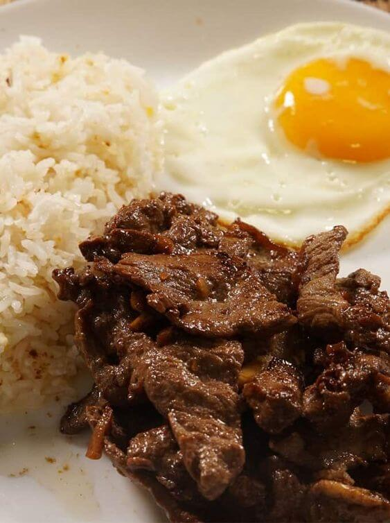

Sa bansang Pilipinas, isa sa mga pinakasikat at paboritong pagkain ng mga Pinoy ang tapsilog. Ang tinapay,
itlog, at sinangag—ito ang mga pangunahing sangkap ng pampatanghalian na ito. Ang tapsilog ay isang simpleng
ngunit napakasarap na pagkain na kilala sa kanyang lasa at kahalagahan sa bawat Pilipino.
Ang unang bahagi ng salitang "tapsilog" ay "tapa." Ang tapa ay ang palamig na karne ng baka na marinated sa
iba't ibang mga sangkap tulad ng toyo, suka, bawang, at mga pampalasa. Ang tamang pamamaraan ng paghahanda ng
tapa ay nagbibigay ng malinamnam at malasutlang karne na sadyang nakakatakam. Sa bawat kagat ng tapa,
mararamdaman mo ang linamnam nito na nagpapakilig sa iyong panlasa.
Ang susunod na bahagi ng "tapsilog" ay "sinangag." Ito ay sinaing na bigas na niluto kasama ang bawang,
sibuyas, at iba pang mga sangkap. Ang sinangag ay nagbibigay ng lasa at textura na kailangan upang lubos na
ma-enjoy ang tapsilog. Sa tuwing kumakain ng sinangag, mararamdaman mo ang mga maliliit na piraso ng bawang at
sibuyas na nagbibigay ng kakaibang timpla sa iyong dila.
Ang huling bahagi ng "tapsilog" ay ang "itlog" o ang pula at malasutlang yungib ng lasa sa bawat kahigop. Ang
itlog na sunud-sunod na nabutas at iniluto ay nagpapahiwatig ng tamis at kasabikan sa bawat kainan ng
tapsilog. Ang pagkakaluto ng itlog ay maaaring maging manipis na pudpod o maaaring magkaroon ng mas
malasutlang kahit na kahit ano pang mas gusto mo. Ang pagpili sa iyong kagustuhan ay isang personal na
pagpapasya at hindi maaaring mali.
Kapag ang tatlong sangkap na ito ay pinagsama-sama, nabubuo ang tapsilog—isa sa mga pinakamahusay at simpleng
pagkain na maaari mong matikman. Sa bawat kagat ng tapsilog, maaari mong maranasan ang pagkasarap ng lasang
tumatagos sa iyong mga papillae, ang pagsasama-sama ng tamis, alat, at kasiyahan sa iyong mga damdamin.
Ang tapsilog ay hindi lamang isang pagkain, ito rin ay nagbibigay-daan sa mga tao upang magsama-sama. Sa mga
karinderya, kainan, at mga tindahan ng tapsihan, makikita mo ang mga taong nagpapakasasa sa tapsilog. Ito ay
nagbibigay ng pagkakataon sa mga tao na magkakasama at magbahagi ng kasiyahan sa pagkain.
Sa Pilipinas, ang tapsilog ay isa sa mga pangunahing pampatanghalian ng mga Pinoy. Ito ay maaaring ihain sa
mga karinderya, fast-food chains, o kahit sa mga paboritong tindahan sa tabi-tabi. Ang tapsilog ay nagbibigay
sa atin ng enerhiya at sigla sa umaga, at nagpapaligaya sa atin sa bawat kainan.
Sa huli, ang tapsilog ay hindi lamang isang pagkain, ito ay simbolo ng pagiging Pinoy, kasimplehan, at
kasaganaan. Sa tuwing tayo'y kumakain nito, ipinapakita natin ang ating pagpapahalaga sa ating kultura at
pagkakakilanlan. Kaya sa susunod na pagkakataon na matikman mo ang tapsilog, savorin mo ang bawat kagat, dahil
sa bawat kainan ay nagpapakita ka ng pagmamahal sa iyong sariling kultura at pagiging Pinoy.
Tapsilog: Ang Pambihirang Almusal ng mga Pinoy
